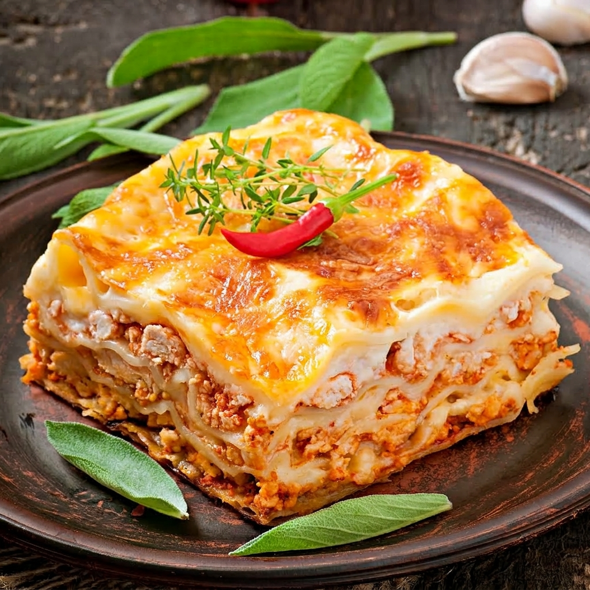

Lasagna
Home

Lasagna, lasagna. How I love thee! It is possibly one of the most loved
foods in the whole wide world, and understandably so. There is just
something so sentimental about lasagna, so comforting. It evokes images of
of gatherings with family and friends all around the world. It is the sort
of food that is like a big warm hug, and so more-ish you want to keep
digging in until you burst.
Ingredients and Tools
The Meat Sauce is basically just like Bolognese.You need:
-
Onion, garlic, carrot and celery - for the flavour base, a soffrito.
- Beef
- Canned tomato and tomato paste
- Red wine - for extra flavour!
-
Seasonings - beef bouillon cubes (stock cubes), bay leaves, thyme,
oregano, Worcestershire sauce
For the white sauce, you need:
For assembling, you need:
-
Lasagna sheets - preferably fresh (from the fridge section of grocery
stores) but dried works just fine too
How to make lasagna
See? I told you the meat sauce was just like making Bolognese! Though
here, we cook that meat sauce long and slow, to develop incredible rich
flavours and make the beef melt-in- your mouth.
And here's how you layer it up:
-
Smear a bit of meat sauce on the base first - stops the
lasagna sheets from sliding around;
-
Layer 1 - top with meat sauce, bit of white sauce
-
Layer 2 - lay out more lasagna sheets, then top with
more meat sauce and more white sauce
-
Layer 3 - repeat again, lasagna sheets, meat sauce then
white sauce; and
-
Topping - cover with lasagna sheets, pour over
remaining white sauce then sprinkle with cheese.